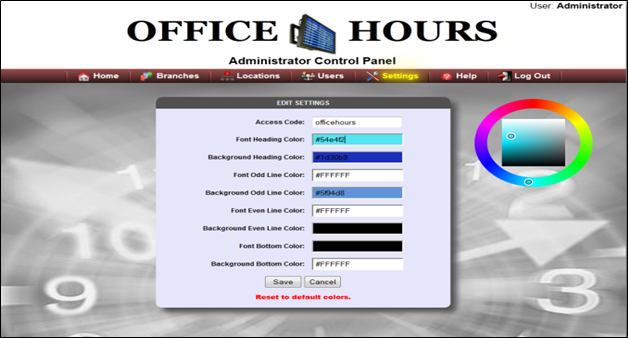

Initially, User must enter Access Code in order to get authority to change page settings. User must input the correct Access Code. If the Access Code is incorrect, User is not allowed to change web page settings. In order to change settings, Users are given various options with their respective text boxes. User must click on the text box to produce the colour icon and then pick a colour. It will show the selected colour on the text box by changing the text box colour and, at the same time, changing all the selected settings on the web page. Press “Save” to apply all settings on the web page. If a User does not press “Save,” no change will be applicable on web page. If, by chance, User selected the wrong colour and wants to go to the default colours, User can select the link at the bottom of the Settings panel to change all the colours to default colours.

Created with the Personal Edition of HelpNDoc: Free Web Help generator